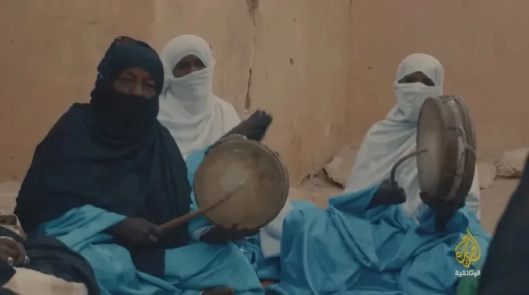
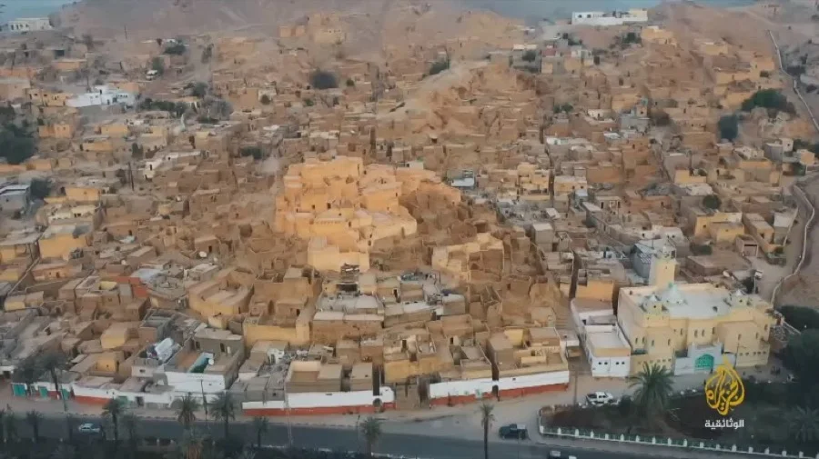
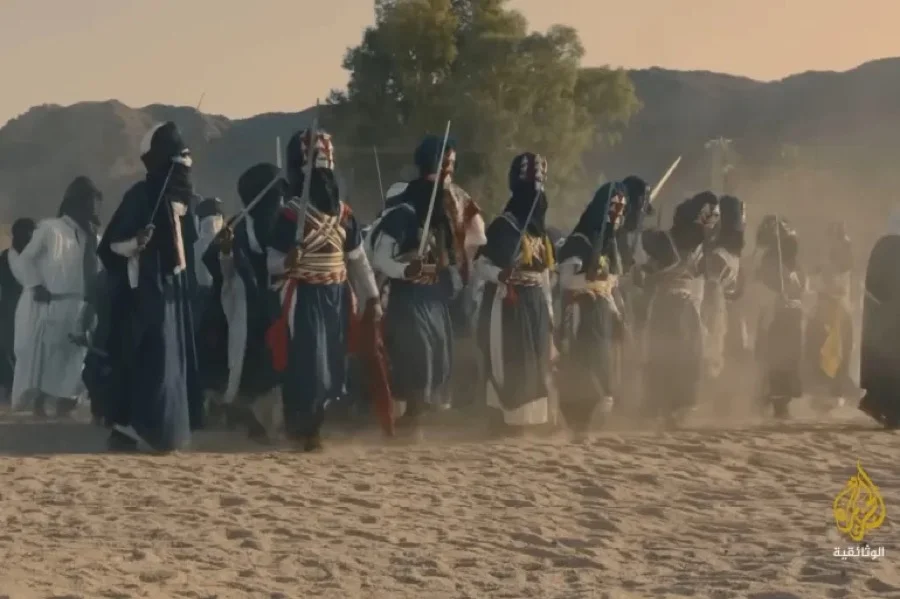
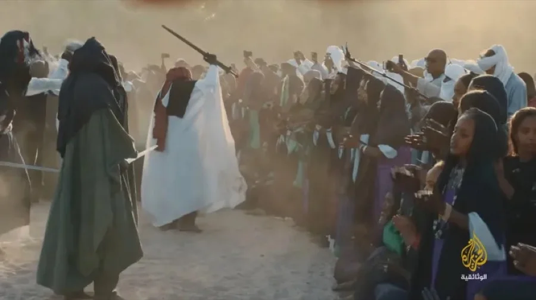

في أقصى الجنوب الشرقي للجزائر، وسط صمت الصحراء الكبرى، تقع مدينة جانت، المدينة التي تبدو وكأنها تعيش خارج الزمن. هناك، بين قصر إزلواز وقصر الميهان، لا يُقاس الوقت بالتقويم المعتاد، بل بموسم ينتظره الجميع كل سنة بشغف كبير: "السبيبة".
السبيبة ليست مجرد احتفال شعبي أو عرض فلكلوري عابر، بل طقس جماعي متجذر في ذاكرة الطوارق، يحمل داخله مزيجاً معقداً من التاريخ والمعتقد والروح الجماعية. خلال أيام محرم، تتحول المدينة بالكامل إلى فضاء للاستعداد، وتبدأ التحضيرات مبكراً، وكأن الجميع يتهيأ لحدث مقدس لا يمكن التفريط فيه.

عازفو الطبول — الإيقاع الذي يحرك روح الاحتفال، الجزيرة الوثائقية
ارتباط عاطفي يتجاوز الاحتفال
ما يلفت الانتباه منذ البداية هو حجم الارتباط العاطفي الذي يجمع الناس بهذا الموسم. فالسبيبة بالنسبة للكثيرين ليست مجرد مناسبة احتفالية، بل جزء من توازن الحياة نفسها. كان الخوف من إلغاء الاحتفالات خلال جائحة كورونا حاضراً بقوة في أحاديث السكان، ليس فقط بسبب غياب الفرح، بل لأن بعضهم يرى أن توقف السبيبة قد يجلب سوء الحظ أو "يغضب الوادي"، كما يردد كبار السن منذ عقود طويلة.
داخل الفيلم، بدت هذه المعتقدات جزءاً من روح المكان أكثر من كونها مجرد حكايات شعبية. أحد الشبان استعاد قصة موسم قديم توقفت فيه الاحتفالات بسبب وفاة أحد الشيوخ، وكيف هبت بعدها رياح قوية على المنطقة، قبل أن تقوم امرأة عجوز بقرع الطبل وسط الوادي، فيلتف الناس حولها وتبدأ العاصفة بالهدوء تدريجياً. ومنذ ذلك الوقت ترسخ الاعتقاد بأن السبيبة تحمي المدينة من المصائب.
الفيلم لا يتعامل مع هذه القصص بمنطق التفسير أو التفكيك، بل يقترب منها بهدوء، كجزء من الخيال الجماعي الذي يمنح المجتمع تماسكه واستمراره.

مدينة جانت — بين قصر إزلواز وقصر الميهان، الجزيرة الوثائقية
السيف… أكثر من أداة للرقص
التحضيرات للسبيبة تبدأ منذ الأيام الأولى من شهر محرم. الأسواق تمتلئ بالأقمشة السوداء، والحلي الفضية، والسيوف القديمة التي يتوارثها الأبناء عن الأجداد. كان واضحاً أن للسيف مكانة تتجاوز كونه مجرد أداة للرقص أو الاستعراض، فهو رمز للهيبة والانتماء والتاريخ، حتى إن بعض السيوف التي ظهرت في الفيلم يعود عمرها إلى مئات السنين.
شدني كثيراً اهتمام الشباب بتفاصيل اللباس وحركات الرقص، وكأنهم يستعدون لمعركة رمزية لا يجوز فيها الخطأ. كل شيء محسوب بدقة: طريقة لف العمامة، شكل السيف، الإيقاع، وحتى طريقة الدخول إلى ساحة "الدوغيا". هناك احترام كبير للتقاليد، ورغبة واضحة في الحفاظ على الطقوس كما ورثوها عن الأجيال السابقة.

موكب المحاربين — كل تفصيل في الزي والحركة محسوب بدقة
النساء… حارسات الذاكرة
لكن السبيبة لا تقوم على الرجال وحدهم. النساء يشكلن روح الاحتفال الحقيقية. قرع الطبول، الغناء الجماعي، التصفيق، الأشعار، كلها عناصر تصنع الإيقاع الداخلي لهذا الحدث. كانت النساء داخل الفيلم أشبه بحارسات لذاكرة غير مكتوبة، ينقلن الكلمات والألحان والحركات من جيل إلى آخر، ويحافظن على هذا التراث بطريقتهن الخاصة.
ما أعجبني أيضاً في السبيبة هو تلك العلاقة الغريبة بين التنافس والأخوّة. فقصر إزلواز وقصر الميهان يدخلان كل سنة في منافسة حقيقية للفوز، وكل طرف يسعى لإظهار أفضل ما لديه من رقص وأزياء وتنظيم. ومع ذلك، يبقى الاحترام حاضراً بشكل لافت، وكأن الجميع يدرك أن الهدف الحقيقي ليس الانتصار على الآخر، بل الحفاظ على هذا الإرث الجماعي حياً.

رقصة السيوف — تنافس القصرين وسط حشد يعيش اللحظة كاملاً
بصرياً… عالم سينمائي متكامل
بصرياً، كانت التجربة ثرية للغاية. الصحراء، السيوف، الأقمشة السوداء، الطبول، الغبار، وحركة الأجساد داخل الوادي… كلها عناصر صنعت عالماً سينمائياً متكاملاً. التصوير في جانت لم يكن مجرد توثيق لحدث ثقافي، بل محاولة لالتقاط روح المكان نفسها، تلك الروح التي تجعل السبيبة تبدو أقرب إلى ذاكرة جماعية تُعاد كتابتها كل عام.
ما بقي عالقاً في ذهني بعد انتهاء العمل هو أن السبيبة ليست احتفالاً بالماضي فقط، بل طريقة لمقاومة النسيان. فبين الغناء والرقص وقرع الطبول، يحافظ الطوارق على جزء من هويتهم، ويعيدون تأكيد علاقتهم بالأرض والتاريخ والجماعة.
ربما لهذا السبب تبدو السبيبة أكثر من مجرد موسم احتفالي في الصحراء الجزائرية؛ إنها طقس بقاء، وذاكرة حية تتحرك على إيقاع الطبول والسيوف.
In the far southeast of Algeria, amid the silence of the Sahara, lies the city of Djanet — a city that seems to exist outside of time. There, between the ksour of Azellouaz and Mihane, time is not measured by the usual calendar, but by a season that everyone awaits each year with great anticipation: "Sebiba."
Sebiba is not just a folk celebration or a passing folkloric display — it is a collective ritual deeply rooted in the memory of the Tuareg people, carrying within it a complex blend of history, belief, and communal spirit. During the days of Muharram, the entire city transforms into a space of preparation, and readiness begins early, as if everyone is preparing for a sacred event that cannot be missed.
Drummers — the rhythm that drives the spirit of the celebration, Al Jazeera Documentary
An Emotional Bond Beyond Celebration
What strikes you from the start is the depth of the emotional bond people share with this season. For many, Sebiba is not merely a festive occasion but a part of life's balance itself. The fear of cancelling festivities during the COVID pandemic was strongly present in residents' conversations — not only because of the absence of joy, but because some believe that stopping Sebiba might bring misfortune or "anger the valley," as the elders have been saying for decades.
Within the film, these beliefs appeared as part of the spirit of the place rather than mere folk tales. One young man recalled a story of an old season when celebrations stopped due to the death of a sheikh, and how powerful winds struck the region afterwards, until an old woman began beating a drum in the middle of the valley and people gathered around her as the storm gradually calmed. From that day, the belief was cemented that Sebiba protects the city from calamity.
The film does not approach these stories with a logic of explanation or deconstruction, but draws close to them quietly, as part of the collective imagination that gives society its cohesion and continuity.
The city of Djanet — between Azellouaz and Mihane, Al Jazeera Documentary
The Sword… More Than a Dance Tool
Preparations for Sebiba begin from the first days of Muharram. Markets fill with black fabrics, silver jewellery, and ancient swords inherited from fathers and grandfathers. It was clear that the sword holds a significance beyond being a mere tool for dance or display — it is a symbol of prestige, belonging, and history. Some swords that appeared in the film are hundreds of years old.
What impressed me greatly was the young men's attention to the details of costume and dance movements, as if they were preparing for a symbolic battle in which no mistake was permissible. Everything was calculated precisely: how to wrap the turban, the shape of the sword, the rhythm, and even the manner of entering the "Doughiya" arena. There is great respect for tradition, and a clear desire to preserve the rituals as they were inherited from previous generations.
The warrior procession — every detail of dress and movement is precisely calculated
The Women… Guardians of Memory
But Sebiba is not carried by men alone. Women form the true soul of the celebration. The drum beats, collective singing, clapping, poetry — all create the internal rhythm of this event. The women in the film appeared as guardians of an unwritten memory, passing words, melodies, and movements from generation to generation, preserving this heritage in their own way.
What also impressed me about Sebiba is that strange relationship between rivalry and brotherhood. Azellouaz and Mihane enter into a real competition each year, with each side seeking to show its best in dance, costumes, and organisation. Yet respect remains strikingly present, as if everyone understands that the real goal is not to defeat the other, but to keep this collective heritage alive.
The sword dance — the two ksour competing amid a crowd living the moment fully
Visually… A Complete Cinematic World
Visually, the experience was extremely rich. The desert, swords, black fabrics, drums, dust, and the movement of bodies within the valley — all created a complete cinematic world. Filming in Djanet was not merely documenting a cultural event, but an attempt to capture the very soul of the place — that soul which makes Sebiba appear closer to a collective memory being rewritten each year.
What stayed with me after the work ended is that Sebiba is not only a celebration of the past, but a way of resisting oblivion. For in the singing, dancing, and drumbeats, the Tuareg preserve a part of their identity, reaffirming their relationship with the land, history, and community.
Perhaps this is why Sebiba appears to be more than just a festive season in the Algerian desert — it is a ritual of survival, a living memory that moves to the rhythm of drums and swords.